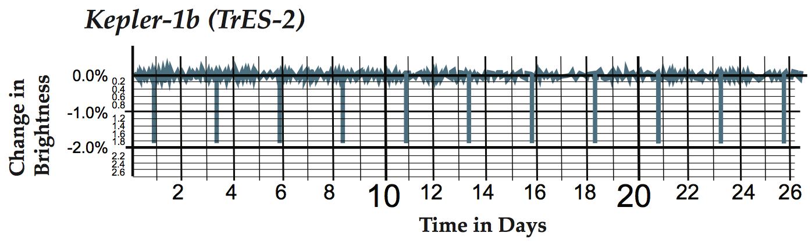
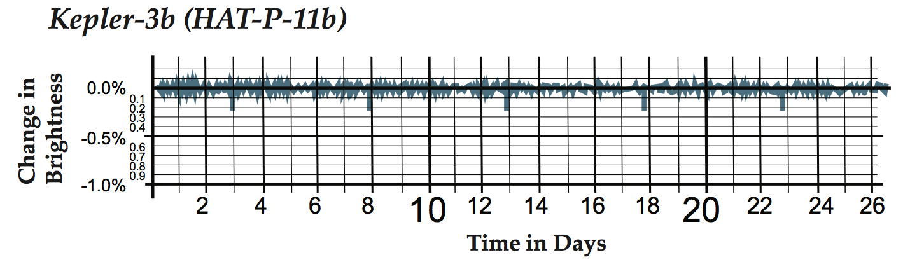

Analyzing Light Curves
Analyzing Light Curves#
As you have already seen, the change in brightness of a star as it is transited by a planet tells us something about the size of the planet relative to the size of the star. Specifically, the ratio of the observed change in flux to the total flux of the star can be written as:
where \(R_p\) is the radius of the planet and \(R_s\) is the radius of the star. When a planet transits a star, we see a planet-sized area blocked out (remember the area of a circle), giving the part on the top. The total flux \(F\) is proportional to the area of the star, giving the part on the bottom.
Additionally, as you just learned, the period of the exoplanet may be determined from the separation between dips in its host star’s light curve. This is because each dip represents a transit of the planet, and the planet transits once every revolution. As it turns out, a planet’s orbital period is directly related to its average distance from the star. The shorter the planet’s period is, the closer it is to the star. This relation is given mathematically by the following expression:
where \(a\) is related to the average orbital distance in AU, \(P\) is the period of the planet in years, and \(M_s\) is the mass of the star in terms of solar masses (\(M_\odot\)). 1 AU, or 1 astronomical unit, is equal to the average distance from the Earth to the Sun, which is \(\sim 1.5\times 10^8\) km. Rearranging this, we can find
This equation is the mathematical representation of what is known as Kepler’s third law, generalized for planets around stars of any mass. As you will be learning more about Kepler’s laws of planetary motion later in your lectures, we won’t go into much detail about it at the moment. For now, you can simply treat it as a tool with which we can determine orbital distances for exoplanets from their light curves.
Knowing this, let’s consider some real light curves obtained using NASA’s Kepler Mission, the most efficient planet-hunter we have today. Kepler is a space observatory designed to survey a region of the Milky Way galaxy to discover Earth-sized and smaller planets. It does so through the continuous monitoring of over 145,000 stars.
Question 8
The following are graphs of light curves from Kepler (source: Transit Tracks Student Worksheet, the Regents of the University of California). Using the equations from above and the given stellar masses (found on the top of each page), calculate
the radius of the planet (in Earth radii; to do so, use the fact that the Sun’s radius is about 110 times that of the Earth),
the period (in days), and
the orbital distance (in AU) of the following planets.
Use the given table to estimate the radius of the given star in solar radii from its mass. Note that \(M_\odot\) is equal to \(M_{Sun}\).
Mass and Radius Estimates Table
\(S_p\) |
\(M/M_\odot\) |
\(R/R_\odot\) |
|---|---|---|
O3 |
120 |
15 |
O5 |
60 |
12 |
O6 |
37 |
10 |
O8 |
23 |
8.5 |
B0 |
17.5 |
7.4 |
B3 |
7.6 |
4.8 |
B5 |
5.9 |
3.9 |
B8 |
3.8 |
3.0 |
A0 |
2.8 |
2.4 |
A5 |
2.0 |
1.7 |
F0 |
1.6 |
1.5 |
F5 |
1.4 |
1.3 |
G0 |
1.05 |
1.1 |
G5 |
0.92 |
0.92 |
K0 |
0.79 |
0.85 |
K5 |
0.67 |
0.72 |
M0 |
0.51 |
0.60 |
M2 |
0.40 |
0.50 |
M5 |
0.21 |
0.27 |
M8 |
0.06 |
0.10 |
Mass of star: 0.98 M\(_{\odot}\)
Mass of star: 0.81 M\(_{\odot}\)
Question 9
Choosing a stellar mass, planet size, and orbital radius, generate your own light curve.
Question 10
Why do you imagine it is important for astronomers to know the orbital radii and sizes of exoplanets? What important information can we learn about planets from these quantities?